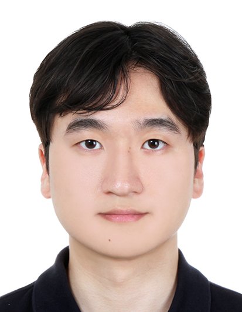

Junhyuk Kwon
I am an M.S. student at the Graduate School of Artificial Intelligence, POSTECH, where I am a member of the Machine Learning Laboratory advised by Prof. Jungseul Ok. Previously, I received B.S. degrees in Electrical Engineering and Artificial Intelligence from Inha University.
My research interests lie in agentic multimodal AI and vision-language reasoning. I build interactive and verifiable AI agents that understand ambiguous human requests, reason over visual environments, and reliably execute multi-step tasks.
If you are interested in my research, please feel free to contact me at tree.jhk@gmail.com.
News
| ProCompNav is accepted to NeurIPS 2026 as an Oral presentation. | |
| Completed an AI Research Internship at KT Corp, working on Deep Research Agents. | |
| VIRO is accepted to CVPR 2026. | |
| RecKG is accepted to ACM SAC 2024 as an Oral presentation. |
Education
| Mar, 2025 – Feb, 2027 |
Pohang University of Science and Technology (POSTECH), Pohang, South Korea M.S. in Graduate School of Artificial Intelligence Advisor: Prof. Jungseul Ok |
|---|---|
| Mar, 2018 – Feb, 2025 |
Inha University, Incheon, South Korea B.S. in Electrical Engineering and Artificial Intelligence (Double Major) Undergraduate Research Advisor: Prof. Young-Duk Seo (KDD Lab) |
Publications
International
-
ProCompNav: Proactive Instance Navigation with Comparative Judgment for Ambiguous User QueriesNeural Information Processing Systems (NeurIPS), 2026 Oral
-
VIRO: Robust and Efficient Neuro-Symbolic Reasoning with Verification for Referring Expression ComprehensionComputer Vision and Pattern Recognition (CVPR), 2026
-
MMTB: Evaluating Terminal Agents on Multimedia-File TasksUnder review at ICLR 2027
-
SegmentWeave: Post-Processing Framework for Enhanced Dense Video CaptioningSubmitted to IEEE ISM 2027 (Short Paper)
-
RecKG: Knowledge Graph for Recommender SystemsACM/SIGAPP Symposium on Applied Computing (SAC), 2024 Oral
Domestic
-
Path-based Explainable Recommender System Leveraging Knowledge Graphs and Large Language ModelsKorea Computer Congress (KCC), 2024 Undergraduate Paper Award
Honors
| 2024 | Grand Prize (2nd Place), Inha AI Challenge — LLM-based Question Answering |
|---|---|
| 2024 | Undergraduate Paper Award, Korea Computer Congress |
| 2023 | Excellence Award (2nd Place), Hyundai Motor Group CTO AI Competition |
Experience
Research & Industry
| Jul – Aug, 2026 | AI Research Intern, KT Corp Deep Research Agent |
|---|---|
| Mar, 2023 – Feb, 2025 | Undergraduate Researcher, Inha University KDD Lab Knowledge Graphs, Recommender Systems, and LLMs |
| Jul – Sep, 2024 | AI Engineer Intern, Growdle RAG-based Investment Research Agent |
Additional
| Sep, 2022 – Feb, 2023 | NAVER Boostcamp AI Tech, Recommender Systems |
|---|---|
| Jun, 2019 – Jan, 2021 | Korean Augmentation to the U.S. Army (KATUSA) |